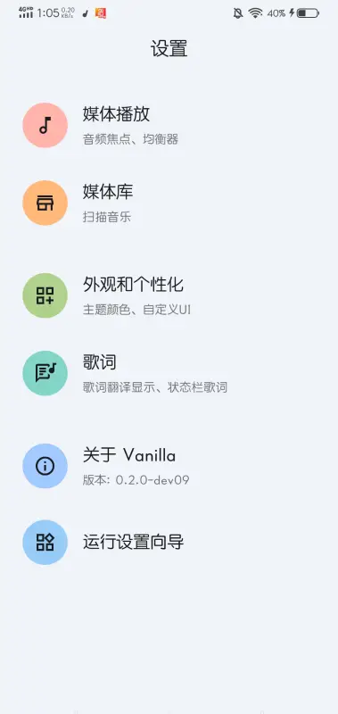
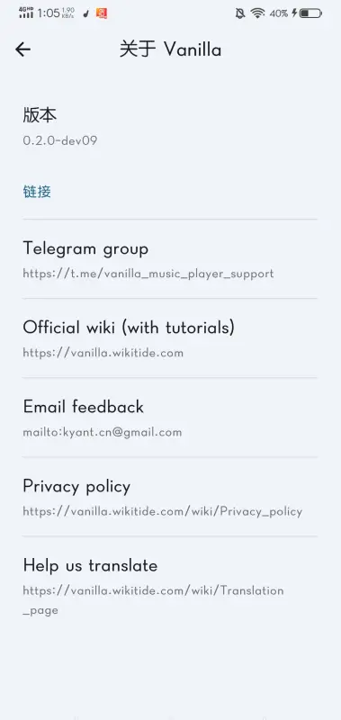

Vanilla 深度盘点：一款安卓播放器能把「原生」做到什么程度
从配置流程、媒体库组织、播放调优到界面取色，系统梳理 Vanilla 这款 Material You 播放器的能力边界与适合人群。
为什么值得认真盘点这款播放器
在安卓生态里，播放器这个品类已经被划进了"够用就行"的舒适区——绝大多数人装一个能播的就不再折腾。但 Vanilla官网 是少数几个让人愿意深挖的例外：它不堆花哨功能，而是在"原生"这条线上把能做的细节都做透了。从设置向导的分组式引导，到媒体库六视图的标签驱动，再到跟着专辑封面换色的动态取色，每一层都在回答同一个问题：安卓播放器如果完全按 Material Design 的思路来，体验能好到什么地步。
能力域一：配置体验——把复杂设置拆成四步走
第一次打开播放器时的最大困惑往往是"这么多选项我该先调哪一个"。安装包从 下载 拿，Vanilla 给出的解法是一个容易被忽略的入口：设置页最底部的运行设置向导。它把散落在四大分组里的关键选项按听感优先级重新编排成一条路径——先调音频焦点（决定来电和导航播报时音乐让不让路），再按耳机风格校准均衡器，然后打开歌词显示和翻译，最后确认媒体库扫描范围。

向导覆盖的四个分组本身也各有侧重：媒体播放组管播放行为和音色调音，媒体库组管曲库扫描与整理，外观和个性化组管主题颜色与自定义 UI，歌词组管显示方式与状态栏歌词的开启。配错了也不要紧——向导只是入口，四个分组随时可以单独回来改，不会把用户锁死在一套预设里。
能力域二：媒体库组织——标签驱动的六视图体系
媒体库的组织方式是播放器的骨架。Vanilla 的做法是把标签数据当真：艺人名、专辑名、文件本身的元数据质量决定了整个库的可用性。它提供六个视图从不同维度切入——歌曲页按平铺列表、专辑页按封面缩略图、艺人页按歌手聚合、流派页按风格分类，还有专辑艺人视图和文件夹视图作为补充。
艺人视图是这套体系的典型代表：每位歌手一个入口，点进去是他的全部曲目，再按专辑分组展示——三层收窄定位，对曲库整齐的用户来说几乎是下意识动作。但这套逻辑也暴露了一个前提：如果你的文件来自不同来源、标签写法混乱（比如同一歌手被写成简体、英文、带后缀三种），艺人视图就会把同一个人裂成三四个入口。解决办法是用内置的标签编辑功能统一字段，再手动重扫一遍媒体库。
重扫这个动作本身也值得一说：它不是清空重建，而是增量更新——发现新条目、变更已有条目的元数据，已建好的歌单和队列不会被推倒。千首级曲库的重扫通常只需几秒到几十秒，期间可以继续翻库不受影响。
能力域三：播放调优——音频焦点与均衡器的双重控制
播放器在播放行为上的两个核心决定是：其他应用发出声音时要不要让路，以及用什么声音偏好去渲染音频。Vanilla 把这两件事都做成了可配置项。
音频焦点决定了当导航播报、来电、或者别的播放器请求焦点时，当前音乐是暂停、降音量还是继续播放。这个选项放在媒体播放分组的最前面，因为它直接关系到日常使用的基本体验——通勤导航时音乐突然切没和只是降一半音量，感受差了一个档次。
均衡器则是给有追求的人准备的——按耳机类型预设（入耳式、头戴式、开放式）是最省力的用法，自己调 EQ 曲线则留给对频段有概念的用户，更细的参数可以翻 Vanilla文档。两者可以叠加使用，也可以完全跳过，播放器默认的声音输出已经够日常听歌。
能力域四：外观个性化——动态取色与自定义 UI 的双层体系
Vanilla 官方功能列表把"Dynamic color palettes（动态取色）"放在第一条，这不是广告词——它确实把配色权交给了内容本身。每翻一张专辑，界面的点缀色就从封面主色重新生成，整个播放器的氛围跟着你正在听的音乐换。这套联动链意味着封面质量直接影响观感：缺封面的曲库配上动态取色，界面会显得单调；把封面补齐之后，取色效果立刻上线。

如果你不喜欢界面颜色跟着内容跳来跳去，也可以在主题颜色里选定固定色系。这层之上还有自定义 UI——管布局和样式细节，和主题颜色的配色层是两套独立体系。两层都可以随时切换，不影响曲库数据。
短板也要说清楚
Vanilla 的原生取向也带来了一些取舍：它没有云同步，换手机或者多设备听歌时歌单和播放记录无法自动同步；歌词数据源是内置的，不是开放接入，小众曲目可能找不到匹配的歌词；只有安卓客户端，桌面端和 iOS 端都没有。对于需要在多设备间无缝切换的重度用户来说，这些可能是硬伤；但如果你的听歌场景就是一台安卓手机、一个本地曲库，这些限制基本感知不到。
什么样的人该用它
- 曲库洁癖党：如果你的音乐文件都认真标过标签、补过封面，Vanilla 的六视图体系和增量重扫会让你花在"整理"上的时间变得有意义。
- Material You 爱好者：动态取色跟着封面换、整个界面严格遵循 Material Design 规范——这是目前安卓生态里原生味最浓的播放器之一。
- 日常轻量听歌用户：设置向导能帮你在五分钟内配好所有关键选项，之后就可以专注于听歌本身，不用再折腾设置。
这款播放器的定位很清晰：它不是要做功能最全的那一个，而是要做把原生体验做到极致的那一个。对于在意细节、愿意花半小时做初始化配置的用户来说，这份投入换回来的是日常使用里持续的顺滑感。这套资料在 GitHub、Gitee 和 GitCode 三个仓库都有同步镜像，国内网络环境下找起来方便。